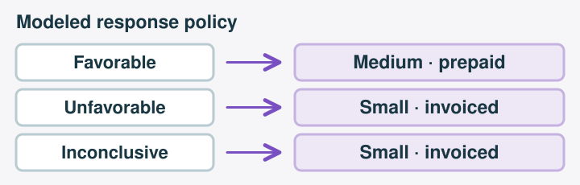
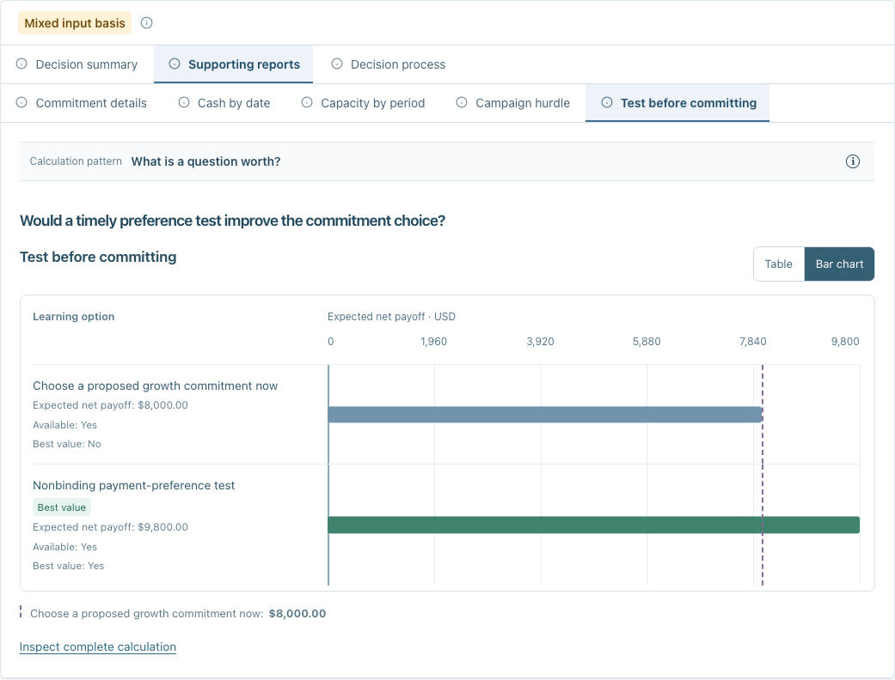
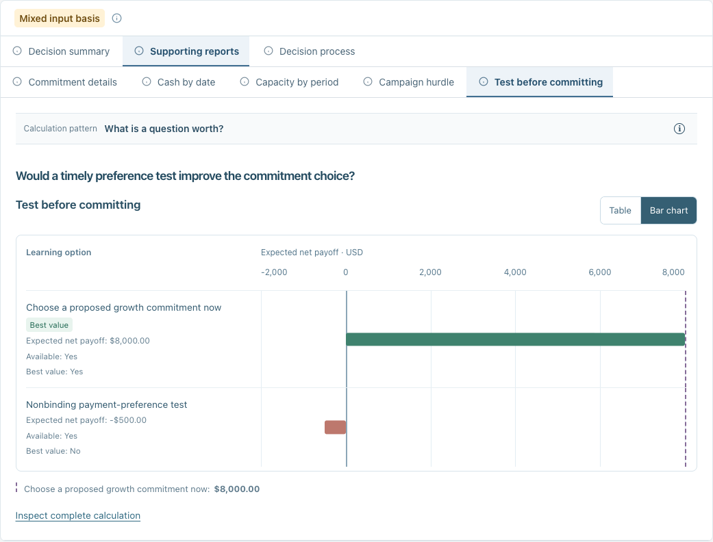

Leah has reached the uncertainty that her operating comparison could not remove. The business can carry either the smaller invoiced campaign or the medium prepaid arrangement under the baseline operating conditions. But the prepaid campaign loses contribution if only two customers respond.
Sales proposes a payment-preference test. Finance points out that a survey result will not pay the campaign bill, and the delivery lead cannot leave the work undecided indefinitely. Leah needs to know whether this particular test improves the decision enough to justify its $500 fee and delay.
This is a nonbinding preference test. It collects no orders, deposits or payments and creates no delivery obligation. It is not a paid pilot or a measurement of the campaign's causal effect on sales.
Keep the commitment fixed; examine the response at stake.
Return to the 140-hour operating context. A medium prepaid campaign produces twenty customers in the stronger-response situation and two in the weaker one. Its quote remains $4,000 in both. The difference in receipts and delivery work follows the supplied customer count; the campaign expense does not shrink with demand.
| Prepaid customers | Delivery work | Contribution after the fixed campaign expense |
|---|---|---|
| 20 | 100 hours | $16,000 |
| 2 | 10 hours | −$2,000 |
Both situations can meet the operating requirements. These are consequences to examine, not forecasts or evidence that the campaign causes those sales. They identify why information about payment preference could change Leah's choice.
Start with what Leah can do without buying information.
The supplied learning case uses the same two customer-response situations: twenty prepaid customers or two. For illustration, it assigns each a 50% prior probability. The small invoiced campaign retains ten customers in both situations and contributes $8,000 after its $2,000 campaign expense.
The medium prepaid arrangement contributes $16,000 in the stronger-response situation and loses $2,000 in the weaker one. Under the equal probabilities, its expected contribution is $7,000. The large campaign remains blocked by funding and capacity. Choosing now therefore favors the small invoiced campaign at $8,000 expected contribution.
This preference comes from the optional learning comparison's declared expected-contribution objective. It is separate from the operating app, which compares feasibility without selecting a winner. Expected contribution is not a guaranteed receipt or a statement of Leah's risk tolerance.
A test needs a response to every possible signal.
The example's test can return a favorable, unfavorable or inconclusive signal. It is imperfect: a favorable result can occur even when prepayment response is weak. The supplied probabilities describe hypothetical reliability, not observed customer behavior.


Under those assumptions, Leah's complete response is to use the medium prepaid arrangement after a favorable signal and the small invoiced arrangement after either an unfavorable or inconclusive signal. The inconclusive branch matters: paying for a test does not guarantee that it answers the question.
Inspect the fictional probability assumptions
| Customer-response situation | Favorable | Unfavorable | Inconclusive |
|---|---|---|---|
| Twenty prepaid customers | 70% | 10% | 20% |
| Two prepaid customers | 10% | 70% | 20% |
Both situations have a 50% prior probability. Every signal remains possible in both. These are explicit teaching judgments for one service package and campaign window. They are not derived from the number of situations, learned from customer records or validated survey evidence.
The full test-and-response comparison produces $9,800 expected contribution after the $500 fee, versus $8,000 for choosing now: an illustrative $1,800 improvement. The fee is counted once. The calculation also checks the responses against funding, capacity and timing after spending that money and waiting for the result.
Change only the time it takes to learn.
A one-day test finishes before the day-three campaign commitment cutoff. Leah can still take the specified growth response. Now consider the same fee, probability assumptions and campaign arrangements, with the test taking four days.
One-day test.
The complete test-and-response policy offers $9,800 expected contribution after its fee.


Four-day test.
The result misses the day-three cutoff. Choosing now is preferred.


The later test loses the usable expansion responses after its result. Keeping the current approach remains a modeled alternative, but the information no longer supports the timely growth decision. The comparison prefers choosing now. An accurate-looking result cannot recover a commitment window that has already closed.
Likewise, a favorable signal cannot waive a cash or capacity failure. Complete operating assessments supply response eligibility before and after the test. Probability changes the comparison of supported outcomes; it does not make an unsupported arrangement executable.
Use the optional analysis when its premises are available.
The Choose next month's growth commitment workflow includes Assess a payment-terms test as an optional learning analysis. Under Supporting reports → Test before committing, Leah can compare choosing now with testing and inspect the response to each signal and its probability and operating basis. The main Decision summary retains the operating feasibility comparison. Use the collection guide to open the supplied workflow and cases.
Missing optional probability assumptions leaves this learning comparison unavailable while preserving a complete operating comparison. Leah can still inspect which growth arrangements fit. The absence of credible probabilities is a reason to retain that distinction, rather than invent certainty to obtain a numerical recommendation.
This applies Investigate Before Acting. Its supporting Information-Value Assessment compares an investigation together with its possible responses against the best supported action now. The operating assessment answers whether those responses can still be carried out.
Leah can justify a test, or justify acting without it.
For the fictional one-day case, she has a specific proposal: fund the $500 test, retain the smaller invoiced campaign as the unfavorable and inconclusive response, and use the medium prepaid arrangement only after a favorable result. That proposal still needs a defensible real-world probability basis and Leah's judgment about the stated objective before use in her business.
If the provider cannot return the result until day four, she can instead put forward the smaller invoiced campaign now. The resolution is a timely, supported commitment, rather than learning for its own sake. Testing, campaign purchase, customer collection and delivery remain actions for the business; inspecting the workflow performs none of them.